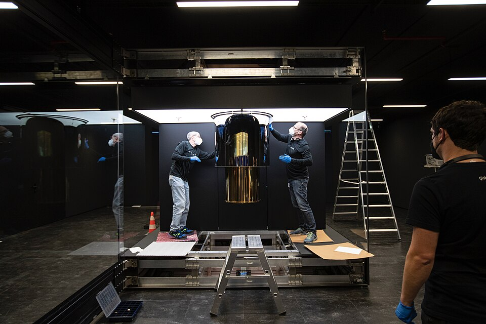

양자컴퓨터 · Wikimedia
섀넌의 비트는 0 또는 1 — 둘 중 하나입니다. 그런데 양자역학은 — 정해지기 전에는 둘 다 동시에 가능하다고 합니다. 동전이 공중에서 회전 중일 때 — 앞도 뒤도 아닌 겹친 상태입니다.
이걸 1개 갖고 있는 것이 큐비트(Qubit)입니다. 그래서 큐비트 1개는 — 0과 1을 동시에 처리합니다.
단, 측정하는 순간 — 겹침이 무너지고 0이나 1로 결정됩니다. 그래서 양자컴퓨터는 "결과를 어떻게 끌어내느냐"가 가장 어렵습니다.